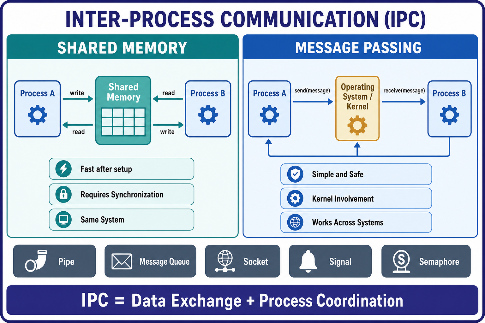

📘 OS Notes New
Computer Hub
← All sections
Practice Hub
/
Computer
/
OS Notes New
/ 2.H
SECTION 2 · SUBTOPIC 2.H
Inter-Process Communication (IPC)
Shared Memory, Message Passing, Pipes, Queues, Sockets, Signals, and Semaphores.

Generated comparison of Shared Memory and Message Passing, with common IPC mechanisms.
← Section overview
Back to top ↑